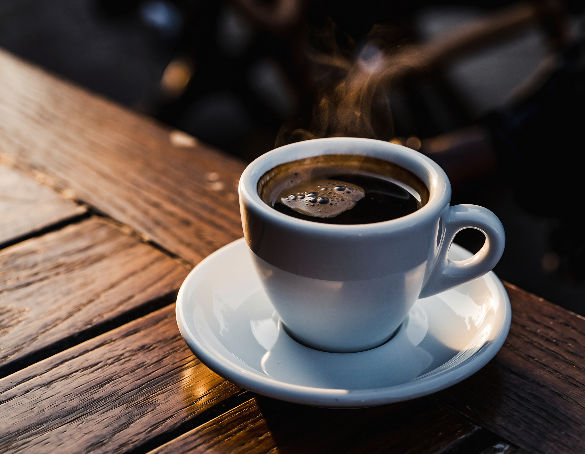
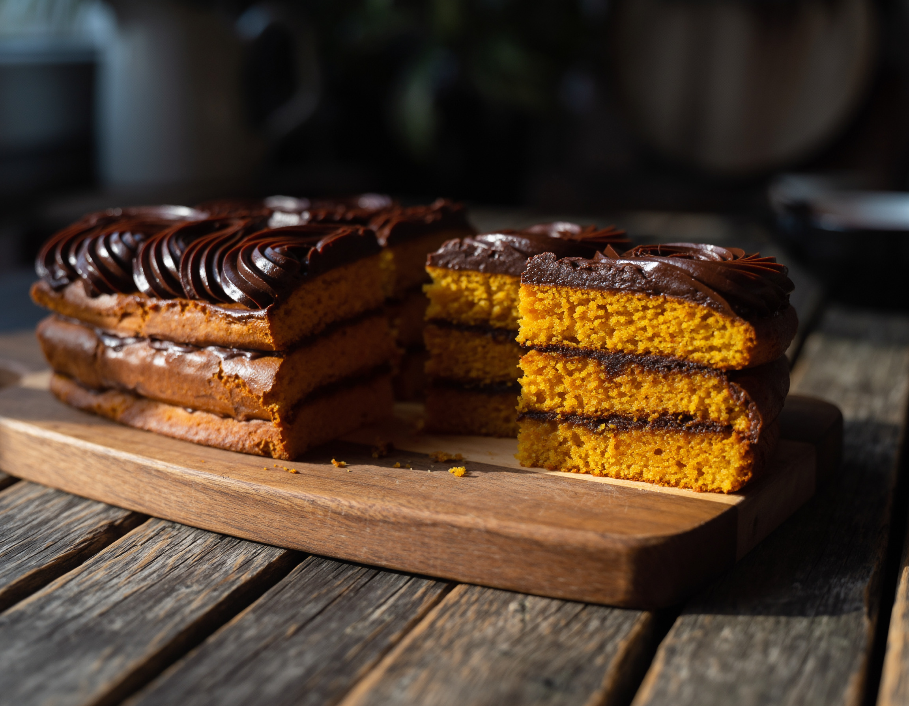

Seu Refúgio: Café, Livros e Aconchego.
Descubra a combinação perfeita entre o aroma do café e o prazer de uma boa leitura. Um cantinho de paz na agitação da cidade.
Veja Nosso Cardápio☕ Café de Qualidade
Grãos selecionados e torra artesanal para a melhor experiência.
📚 Uma Nova Leitura
Centenas de títulos, novos e clássicos, esperando por você.
Sobre o Nosso Refúgio
Mais do que uma cafeteria, somos um espaço criado para desacelerar. Fundado por um casal apaixonado por literatura e cafeína, "Meu Refúgio" é o seu convite diário à tranquilidade.
Conheça Nossa HistóriaNossos Favoritos

Expresso Duplo
Intenso e cremoso, a dose perfeita de energia.
Livro do Mês
O best-seller que está na boca do povo e nas prateleiras.

Bolo de Cenoura
Receita da vovó com cobertura de chocolate, irresistível!